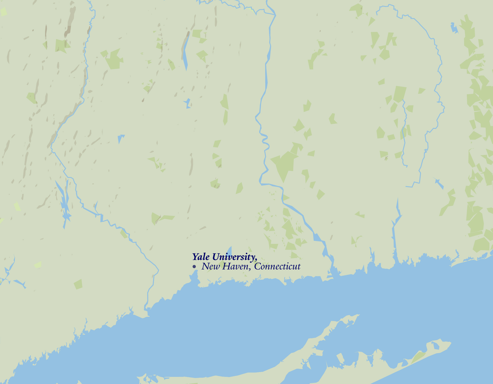

"Yale University acknowledges that indigenous peoples and nations, including Mohegan, Mashantucket Pequot, Eastern Pequot, Schaghticoke, Golden Hill Paugussett, Niantic, and the Quinnipiac and other Algonquian speaking peoples, have stewarded through generations the lands and waterways of what is now the state of Connecticut. We honor and respect the enduring relationship that exists between these peoples and nations and this land."
Above is Yale University’s land acknowledgment— the way you've heard it spoken aloud at public events or meetings many times on campus. Commonly used in academic, cultural, or public gatherings, land acknowledgments are formal statements intending to recognize the Indigenous peoples who have stewarded a particular area, past, present, and future, acknowledging both history and the ongoing presence of Indigenous communities.

Yale University occupies the traditional lands of the Mohegan,
Mohican,
Mashantucket Pequot, Eastern Pequot,
Schaghticoke,
Golden Hill Paugussett,
Niantic,
Quinnipiac,
and other Algonquian-speaking peoples.
The land acknowledgment names nations most Yalies have never seen on a map.
This is the story of how those nations (and many more) converged on one house at 26 High Street.
Yale was founded in 1701 on Quinnipiac land. For most of its history, it's relationships with Indigenous peoples were often shaped by extraction than exchange.
Despite this, in 1906, Henry Roe Cloud became one of the first known Native students at Yale.
Wow! One of your friends must be in Aaron Reiss's "Telling Stories With Maps" class — how cool!
Sadly, this site is meant to be viewed on a computer, so if you are on a phone or tablet then it's gonna look all kinds of wonky and you might get the wrong impression about how amazing this work is.